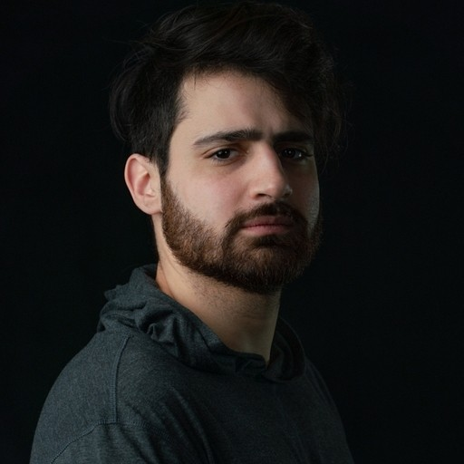

Pull requests from Factory jobs
Opened from Slack requests, Sept 16 to Nov 5, 2026
Senior engineer at YOKE, the company behind NIL Club and Athlete Merch. Before that, six years at Cameo. Thirteen years shipping production software. Based in Zug, Switzerland.

Most teams use one AI coding assistant at a time, with a person watching it. Factory runs a crew of them on its own. A teammate asks in Slack, and agents plan the work, write it in an isolated copy of the codebase, prove it on a real iPhone simulator, have a second model check it blind, and come back with a pull request and screenshots.
Most of the engineering is operations: leases, health checks, failover between model vendors, and gates the agents can't talk their way around. Try breaking it.
Simulated, with timings compressed. The structure is real; the data is made up. Open the console and type factory.status().
Shell shims and gates refuse any push, simulator or approval an agent isn't leased for.
An append-only mailbox is the single source of truth, so a crashed agent loses nothing.
Agents fail over between Gemini and Claude on outages or when quota runs low.
Simulator screenshots and a blind review from a different model family.
I moved our reads onto self-hosted Postgres replicas on Kubernetes. The classic catch: you save something, read it back from a replica, and it isn't there yet. The fix is a token. Step through it.
Glad to review talks, judge technical work, or compare notes on running agents in production.
fabricio@fabriciosantecchia.com